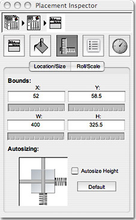
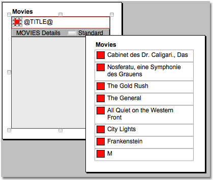
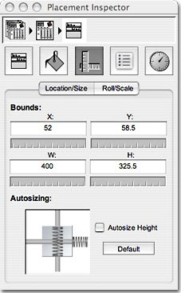
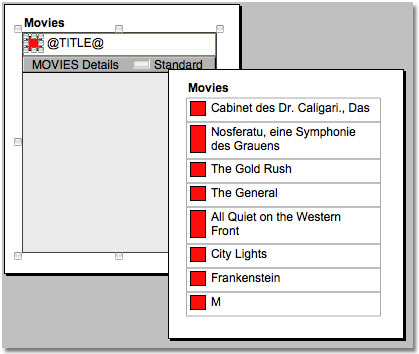

HOME > SUPPORT > LAYOUT MANAGEMENT
ReportMill Layout Management
Dynamic Resizing By nature, ReportMill deals with dynamic data: text strings that may vary in length, images of various sizes, etc. In order to produce a visually appealing report that can faithfully represent all this dynamic data, ReportMill has several powerful features, and provides fine-grained access to them in the design application. Text fields inside an individual table row will automatically grow to the size of the dynamic text by default. In order to prevent this newly resized field from running over the contents of the next row, the table row the text is contained in will also grow. How a field behaves when the table row it is in resizes can be controlled by adjusting the shape's Springs and Struts settings.
Springs and Struts The ReportMill interface for configuring a shape's springs and struts is found in the Location/Size inspector. Below is a screen shot of that inspector. It is currently configured with the default springs and struts settings. These settings instruct a shape to maintain its position relative to the top/left of its parent table row, to maintain its width/height and to allow its right/bottom margins to expand.

Grow Vertically Maintaining the original shape and position of a shape is probably reasonable by default, but a shape could additionally benefit from using any extra height made available when a row grows. So for the red rectangle, we'll turn on the height spring, indicating that the height is flexible, and make the bottom margin a strut, which indicates that the bottom margin is not flexible.

Autosize Height The Autosize Height checkbox in the inspector is checked by default for text fields. For other shapes, it is unchecked by default. This option controls whether the shape's parent table row will perform the above described resizing when the height of that shape needs to grow. You might turn this off for a text field if you preferred that your rows always end up the same height, no matter what. Since it is usually preferable in a report to see all the data rather than have it clipped, you probably will rarely want to change this. For shapes other than text fields, the only other shape that might grow to fit its contents would be a dynamic image. For image placeholders set to 'Fit' or 'Fit if Needed', you should turn this option on, so that a row will grow to accommodate the height of the dynamic image. Horizontal Resizing ReportMill does not currently support horizontal resizing, so setting the horizontal springs and struts will not affect the layout of the generated reports.Only 8 Permutations! It may take a bit of experimentation to get the hang of the sizing control, but remember, there are only 3 valid on/off settings (top, height, and bottom). Try changing the settings on some shapes inside a table row and then changing the row's height by dragging on the row's resize bar. You will see how the shapes respond to a change in the row's height. Other Text Resizing Options As described above, text that overflows the bounds of its shape will cause the shape to grow by default, if the text field is inside a table row. Another option, which can be set in the text field's inspector, is 'Shrink Text to Fit'. With this option, the fonts that you have specified for the text will be scaled down so that all the text will be visible inside the text field at its original size. The Paginate option is useful for text that isn't located inside a table row. If the text overruns the bounds of a field that has this option set, additional pages will be generated until all the text has been displayed.
|